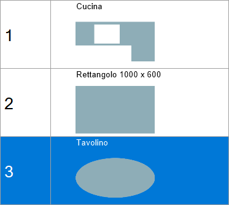
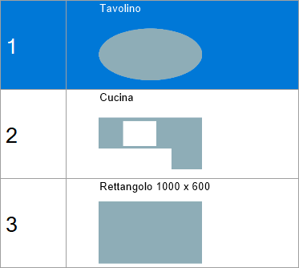

Once the pieces have been positioned in the work area, the screen for managing the piece cutting order can be opened.

Buttons
The arrangement of the pieces in the list on the right indicates the order in which they are cut.
The buttons below can be used to change this order or insert a pause in the execution of operations between one piece and the next.
 | Move with arrows |
Move to the desired position | |
 | Select order from the work area |
 | Pause |
Move with arrows
These buttons can be used to move the selected piece to the position above or below.
In the following example, the piece in the second position is moved to the top of the list.
Before moving | After moving |
 |  |
Move to the desired position
This function moves the selected item to the list position specified in the adjacent text box.
In this example, the last piece in the list is to be moved to the first position. Enter the value “1“ in the box, then press the button.
Before moving | After moving |
 |  |
Select order from the work area
This function allows the piece cutting order to be selected directly from the work area.
When the button is pressed, the program writes a number on each piece indicating its position in the list.

To change the order, click in sequence inside the piece to be placed first, then the second piece, and so on.
When finished, press the button again to confirm the selection.
Pause
When defining the piece cutting order, a pause can be set between the operations performed on one piece and the next.
The program performs all cuts on the pieces preceding the pause, then stops the machine and waits for the operator to issue the Start command.

The pause is inserted after the selected piece has been processed, which in this case is the first piece in the list.